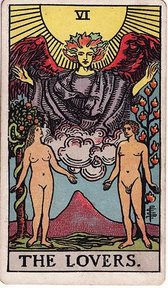

Что происходит
Первая карта описывает положение дел таким, какое оно есть. Не прогноз и не оценка — обозначение того, что уже сложилось к моменту вопроса.
Сформулируйте вопрос — и получите бесплатный расклад на три карты колоды Уэйта с понятной расшифровкой: что происходит сейчас, что остаётся скрытым и каким может быть следующий шаг.
Что происходит

Влюблённые
близость · выбор · согласие
Что скрыто
Луна
неясность · воображение
Твой следующий шаг
Звезда
надежда · вдохновение
Классическая тройка читается слева направо. Каждая карта отвечает за свой слой ситуации — поэтому расклад получается не набором символов, а связным ответом.
Первая карта описывает положение дел таким, какое оно есть. Не прогноз и не оценка — обозначение того, что уже сложилось к моменту вопроса.
Вторая показывает слой, который не на поверхности: чужие мотивы, собственные допущения, недостающие сведения. Чаще всего ответ прячется именно здесь.
Третья — не предсказание исхода, а направление, в котором разумно двигаться. Её удобно читать как совет, а не как приговор.
Тот же сервис, только открывается прямо в Telegram — отдельным окном поверх чата. Ничего не нужно устанавливать, регистрироваться и держать лишнюю вкладку в браузере.
Получи расклад Таро
на свои вопросы
Выбери тему или задай свой вопрос
Готовые расклады
К каждой карте идёт не только значение, но и совет — что с этим делать на практике. Ниже настоящий пример по раскладу из первого экрана.
Ситуация связана не только с чувствами, но и с выбором: насколько желания, ценности и ожидания двоих действительно совпадают.
Совет картыСформулируйте для себя три главных ожидания от отношений и выберите одно, которое спокойно обсудите.
Скрытым слоем может быть не чужая тайна, а общая неясность: неполные сведения, тревожные догадки, переменчивые сигналы.
Совет картыРазделите на листе факты, свои предположения и вопросы, которые можно задать прямо.
Звезда предлагает двигаться не через давление и не через попытку немедленно получить гарантию, а через спокойную надежду.
Совет картыПредложите один спокойный разговор об ожиданиях, заранее решив, какие границы хотите обозначить.
Иногда понятно, что тревожит, но не понятно, как спросить. Тогда проще взять готовую тему — вопрос подставится сам, расклад пойдёт по тем же трём позициям.
Что происходит между вами, чего вы не замечаете и какой шаг снимет напряжение. Самая частая тема.
Куда ведёт сложившаяся тенденция, если ничего не менять. Работает на горизонте месяца-полугода.
Когда оба варианта выглядят равнозначно. Карты не выбирают за вас, но показывают, что вы в каждом теряете.
Стоит ли менять место, что мешает договориться, где сейчас реальная точка роста, а где она только кажется.
Короткий формат на утро: одна тема, к которой стоит присмотреться сегодня.
Расклад Таро — это способ посмотреть на свою ситуацию под другим углом. Карты Таро вытягиваются случайно, но значения у них устойчивые, и наложенные на конкретный вопрос они работают как набор зеркал: показывают то, что вы уже знаете, но пока не сформулировали.
Колода делится на старшие и младшие арканы. В раскладе каждая вытянутая карта попадает в свою позицию, и позиция задаёт, о чём именно эта карта говорит. Одна и та же Луна в позиции «что происходит» и в позиции «что скрыто» читается по-разному.
Именно сочетание «карта плюс позиция» превращает набор картинок в ответ. Без позиций это просто перечисление значений, из которого каждый вычитывает что хочет.
Порядок одинаковый и в браузере, и в боте:
Сделать расклад Таро онлайн бесплатно можно прямо здесь: карты и их значения открываются сразу после вопроса, без регистрации и без оплаты. Смотреть таро расклад онлайн удобно и с телефона — верстка одинаково работает на любом экране.
Таро, расклад онлайн, гадание на картах — слова разные, а запрос один и тот же. Гадание на Таро онлайн бесплатно предлагают многие сервисы, и они делятся на два вида. Одни сервисы честно тянут случайные карты и дают их значения. Другие подставляют заранее заготовленный «позитивный» текст, никак не связанный с выпавшими картами. Отличить просто: пройдите расклад дважды с разными вопросами и сравните тексты.
Здесь карты Таро онлайн, расклад и ключевые слова бесплатны, а развёрнутая расшифровка — платная часть. Таро бесплатно — это именно вход: вытянуть карты и увидеть их значения можно без оплаты и регистрации. Логика простая: вытянуть карты несложно, а собрать из них связный разбор под конкретный вопрос — это и есть работа.
Три карты — золотая середина. Одна даёт слишком общий ответ, десять превращаются в полотно, которое начинающий читает кусками и теряет связность. Три позиции описывают ситуацию целиком: что есть, что под поверхностью и куда идти.
Эту же тройку часто называют «прошлое — настоящее — будущее», но такая разбивка работает хуже. Прошлое вы и так знаете, а будущее в раскладе на три карты обозначено как направление, а не как факт.
Расклад не задаёт неизбежный сценарий. Он описывает расстановку сил на сегодня — и меняется вместе с тем, что вы делаете.
От формулировки зависит больше, чем от самих карт. Вопросы на «да или нет» дают наименее полезные ответы: три карты всё равно опишут ситуацию, а вы будете вычитывать в них односложный приговор.
Что работает лучше:
Гадание на Таро онлайн на отношения — самый частый запрос, и у расклада на эту тему есть особенность. Карты показывают динамику между двумя людьми, но отвечают они вам, а не партнёру. Позиция «что скрыто» чаще говорит не о чужой тайне, а о ваших собственных допущениях насчёт происходящего.
Поэтому и совет в таком раскладе почти всегда про прояснение: задать прямой вопрос, проверить догадку, обозначить ожидание. Это скучнее, чем предсказание, но заметно полезнее.
Расклад Таро онлайн на мужчину спрашивают чаще всего в одной формулировке: что он чувствует и что будет дальше. Здесь стоит сказать прямо — карты не читают чужие мысли. Что они действительно показывают, так это вашу позицию в ситуации: на чём держатся ваши выводы, где вы достраиваете за него и какой шаг зависит от вас.
Если переформулировать вопрос с «что он думает» на «что мне стоит прояснить в этих отношениях», гадание Таро онлайн на мужчину перестаёт быть угадыванием и становится разбором. Ответ от этого делается применимым.
Гадание на будущее онлайн Таро — второй по частоте запрос после отношений, и с ним связано главное недоразумение. Расклад Таро на будущее онлайн не выдаёт готовый сценарий: он описывает тенденцию, которая сложилась к сегодняшнему дню, и то, куда она ведёт, если ничего не менять.
Онлайн гадание Таро на ближайшее работает лучше дальних горизонтов именно поэтому: гадание на Таро онлайн на ближайшее будущее опирается на то, что видно уже сегодня. На отрезке в месяц-полгода расстановка сил ещё держится, и карты говорят о ней осмысленно. На горизонте в пять лет меняется слишком многое, и любой расклад превращается в общие слова.
Отдельный формат, когда вопрос не про человека и не про срок, а про обстоятельство: переезд, смена работы, затянувшийся спор. Гадание Таро онлайн на ситуацию удобно тем, что все три позиции работают в полную силу — есть что описывать в настоящем, есть неочевидный слой и есть понятный следующий шаг.
Запросы вроде «таро расклады новые» и «таро сегодня» обычно означают привычку: человек заходит за коротким раскладом каждый день, как за прогнозом погоды. Формат рабочий, если держать его лёгким — один вопрос на день, без попытки решить картами всю жизнь сразу.
Таро онлайн: новые расклады доступны без ограничения по числу — каждый новый вопрос — это новая случайная раздача. Но повторять один и тот же вопрос по кругу смысла нет: если первый ответ не понравился, менять надо вопрос, а не количество попыток.
Расклад идёт на колоде Райдера-Уэйта — самой распространённой в мире. Её рисунки создавались так, чтобы значение считывалось с самой картинки, и именно поэтому она удобна новичку: не нужно держать в голове таблицу соответствий.
Старшие арканы вроде Луны, Звезды или Влюблённых отвечают за крупные темы и поворотные моменты, младшие — за бытовые детали. Если в раскладе выпало несколько старших арканов, тема для вас действительно значимая.
Таро не заменяет врача, юриста и финансового консультанта. Вопросы про здоровье, диагнозы, судебные дела и крупные вложения стоит задавать специалистам, а не картам: цена ошибки там слишком высока.
И ещё одно, что стоит держать в голове: расклад описывает ситуацию, а не выносит приговор. Если результат вызывает тревогу вместо ясности, это повод отложить карты, а не раскладывать ещё раз до «хорошего» ответа.
Отдельно про то, чего здесь нет. Это страница про расклад, а не справочник по колоде: значения отдельных карт, разборы мастей — мечей, кубков, пентаклей — и обучающие материалы ищите в тематических энциклопедиях. Авторские каналы с раскладами на Дзене — тоже не к нам, у них свои площадки.
Напишите вопрос одним предложением и запустите расклад. Три карты вытягиваются случайно и ложатся в позиции «что происходит», «что скрыто» и «твой следующий шаг». Дальше открывается расшифровка.
Ничем по сути расклада — отличается только то, где он живёт. В боте вопрос задаётся обычным сообщением, а расклад остаётся в истории чата, к нему можно вернуться через месяц. На сайте удобнее читать длинную расшифровку с большого экрана.
Да, это самый частый запрос. Важно помнить, что карты отвечают вам, а не партнёру: позиция «что скрыто» чаще показывает ваши собственные допущения о происходящем, чем чужую тайну. Поэтому и совет обычно про прояснение, а не про предсказание.
Не его мысли — чужие мысли карты не читают. Расклад показывает вашу позицию в ситуации: на чём держатся выводы, где вы достраиваете за него и какой следующий шаг зависит от вас. Если заменить вопрос «что он думает» на «что мне стоит прояснить», ответ становится применимым.
Нет. Расклад Таро на будущее описывает тенденцию, которая сложилась к сегодняшнему дню, и то, куда она ведёт, если ничего не менять. Гадание на ближайшее будущее работает лучше дальних горизонтов: на отрезке в месяц-полгода расстановка сил ещё держится.
Райдера-Уэйта — самая распространённая колода в мире. Её рисунки сделаны так, чтобы значение считывалось прямо с картинки, поэтому она удобна и новичку, и тем, кто читает карты давно.
Одним предложением, про конкретную ситуацию и про свои действия. «На что обратить внимание» работает лучше, чем «чем всё кончится». Вопросы на «да или нет» дают наименее полезный результат.
Ограничения по числу нет: каждый новый вопрос — это новая случайная раздача. Но повторять один и тот же вопрос по кругу смысла мало. Если первый ответ не понравился, менять стоит вопрос, а не количество попыток.
Про общее самочувствие ситуации — да, про диагнозы, лечение, суды и крупные вложения — нет. Такие вопросы стоит задавать врачу, юристу или финансовому консультанту: цена ошибки слишком высока, чтобы полагаться на карты.
Сформулируйте вопрос одним предложением — и получите расклад на три карты с расшифровкой. В браузере или в Telegram, как удобнее.